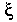

Signs for technical/specialized vocabulary
David Bar-Tzur
Links updated monthly with the help of LinkAlarm.

Walrus1; George Washington.2
EXPLANATION OF THE GLOSSING SYSTEM
(to understand how I describe the signs in this dictionary).
For content knowledge of how to use the physics terms in context, see Guided tutorial in physics for interpreters.
For negotiating and developing temporary signs, see Preparation and sign negotiation
For vocabulary lists to determine helpful signs for a specific discipline, see Vocabulary lists by topic.
- Wack (PCP)
- (1) (2h)[B^] touch shoulders and twist to the position for wings and flutter + D-U-S-T. (2) P-C-P. (3) [bO] holds joint to mouth and moves rapidly back and forth twice while inhaling. + A-D. This is a Western sign. (4) A-D-M. This and the next sign refer to a mixture of Angel Dust and marijuana. (5) [bO] holds joint to mouth and moves rapidly back and forth twice while inhaling + A-D-M. (6) Signs (3) or (5) may have their first part (MARIJUANA) replaced by SNORT-DRUG, see "cocaine".
- wages
- HOUR++ SALARY.
- wait before acknowledge
- W-A-C-K.
- wait state
- W-S.
- Wales
- (1) [W], PO > signer, touches chin at FTs and moves away from signer. (2) [W:], PO > NDS, moves down slightly. For an animated gif of this sign, see BritishSignLanguage.com. Click on "Groups of words" - "Countries" - "Wales." To see the reference source for the sign(s) for this country or to look up other countries in the same geographical area, see Indigenous signs for countries. To find signs for cities within this country (some have no entries) see Indigenous signs for cities.
- walk (baseball)
- (2h)[Bb], POs down, FOs away, alt. move as if walking.
- walk through
- (1) WALK THROUGH. (2) MOVE PRACTICE.
- wall
- (1) (2h)[Bb], POs away, FOs up, touch and separate to sides. (2) [B], PO > NDS, FO away, descends.
- wallet
- (2h)[B], FOs away, are held together and hine open at FTs 2x.
- walrus
- (2h)[S], POs ><, move straight down from sides of mouth to show tusks. For a QuickTime movie of this sign, see ASL browser - walrus.
- ward (LDS [Mormon])
- W-GROUP.
- warlock
- MALE WITCH.
- wardrobe
- ~ (furniture)
- (2h)[5:] pull(s) out drawer, and HS closes to [S]. This is done several times while descending to show multiple drawers.
- ~ (Theater)
- CLOTHES.
- warm
- [S], PO > mouth, FO up, moves forward and opens to a [5] like a warm breath.
- warm up
- WARM U-P.
- warn
- (2h)[B], POs down, FOs away, DH slaps at top of NDH.
- warning (theater)
- (1) WARN. (2) READY?
- warp (engineering)
- ~ (in general)
- (2h)[B], DHPO > NDS is held with FO away on top of NDHPO up, and FT of DH suddenly bend to [B^].
- ~ (wood)
- WOOD + (2h)[B^], FOs ><, DHPO up is held low and on DS, NDHPO down is held high and at NDS. Hands switch POs. For a QuickTime movie of this sign, see ASL browser - warp.
- warranty
- (1) W-A-R-R-A-N-T-Y. (2) PROMISE.
- wart
- ~ (general)
- [5:] places FT on the backhand of [loose 5].
- ~ (on specific area)
- [5:] places FT on the area under discussion.
- wash
- ~ (an object)
- ~ (body)
- (2h)[A] rubs palms in symmetric circular motion over the part of the body that is being washed, if it is in the centerline of the body. If not, use (1h).
- ~ (car)
- (2h)[A], POs away, rubs palms in symmetric circular motion over the body of the car.
- ~ (dishes)
- (2h)[A], DHPO down, NDHPO up, rub palms against one another in alt. circular motion.
- ~ (hands)
- Hands rub loos palms over one another as if under a stream of water.
- ~ (stage lighting)
- (2h)[5], DPO down, NDPO up, move in circles but with a lag so that hands are on opposite sides of the circle that is described by their movement.
- Washington, George
- [W] touches FT to shoulder and then spirals
forward. (< his epaulets.) For a QuickTime movie of this sign, see ASL browser - Washington.
- waste
- (1) [A], PO up, moves > NDS over the palm of [B], PO up, FO away, then opens to a [5] and scrapes against palm as it moves away. (2) DH [5] and scrapes against palm of [B], PO up, FO away, as it moves away.
- watch
- ~ (wrist)
- (1) [F], PO down, places circular part at site of wristwatch. (2) [open 8] grasps wrist.
- ~ (pocket)
- [5:] draws watch out of pocket.
- watch dog timer
- W-D-T.
- watch glass (Chemistry)
- WATCH GLASS.
- Watchtower
- W-T.
- water
- ~ (in body)
- ~ broke (pregnancy)
- WATER BREAK, SPREAD'from birth canal'.
- body retains (or takes on) ~
- WATER, FAT with pc.
- ~ (non-technical)
- [W], FO up, taps thumbside against chin.
- ~ (technical)
- H TWO"subscripted" O.
- watermelon
- WATER + MELON, that is, [8] flicks middle finger against [S], PO down. For a QuickTime movie of this sign, see ASL browser - watermelon.
- water pipe
- (1) WATER + (2h)C-CL shows shape of rounded bottle + (2h)[F] shows pipe from bottle to mouth. (2) (2h)[C] are held like pipe to mouth and DH moves away to show length.
- water sports (urinating on someone during sex)
- W-S.
- watt
- "W".
- watt hour
- W-H-R.
- watt per steradian
- "W", then hand descends and signs S-R.
- watt per steradian square meter (W/(sr-m2))
- "W" S-R-M SQUARED.
- wave
- W-A-V-E.
Note: Different kinds of waves differ so much in their physical appearance to be represented by one sign.
- wave characteristic
- W-A-V-E DH [C], PO away, circles vertically and comes into contact with NDH [B], PO away, FO up.
- wave compression, ~ condensation
- (2h)[5], POs ><, FOs away, rush together while cheeks puff.
- wave displacement function
- Draw a lowercase xi () in the air.
- waveform
- W-A-V-E-F-O-R-M.
- wavelength
- (1) [3], PO towards, FO down. (2) (2h)[1], FOs up at angle, POs >lt;, meet at FTs to form angle indicated by shape of letter. (3) W-A-V-E MEASURE. Note: Not WAVE LONG, because it could be a short wave.
- wavelength of maximum intensity
- LAMBDA M-A-X"subscripted", where LAMBDA is (2h)[1], FOs up at angle, POs >lt;, meet at FTs to form angle indicated by shape of letter.
- weave bead
- WEAVE B-E-A-D.
- wave rarefaction
- (2h)[5], POs ><, FOs away, rush apart while sucking in cheeks.
- way
- (2h)[B], POs ><, FOs away, hands move forward.
- Way of the Cross
- WAY CROSS.
- W boson (W+ and W-)
- (1) "W" + POSITIVE"superscripted". (2) "W" + NEGATIVE"superscripted".
- weak force
- QUOTE WEAK FORCE.
- wealth
- (1) RICH. (2) LONG-LIST HAVE++ while mouthing (havhavhav).
- wean
- ~ (health science)
- BREASTFEED FINISH, where the first sign is (1) With NDH indicate holding the baby and DH touches
breast with open fingertips and then draws away while closing several times to indicate sucking or (2) Like (1), but no use of NDH. (3) DH surrounds FT of NDH [1], pulls along it until it is released + FINISH. For a QuickTime movie of this sign, see ASL browser - wean.
- ~ (figuratively)
- STOP* with head thrusting to NDS + (2h)[5], POs away, FOs up, shale from side to side symmmetrically + SLOW LESS'bit by bit'.
- wear (automotive)
- WORN-OUT, that is, (2h)[A], FOs away, are held together, then separate while supinating and opening to (2h)[5:]. For a QuickTime movie of this sign, see ASL browser - decay.
- weave
- [B] performs a wavy motion next to [5], PO down, as if it were weaving between its fingers. For a QuickTime movie of this sign, see ASL browser - weave.
- web (construction)
- W-E-B.
- weber
- W-B.
- wedding
- (2h)[5], POs > signer, FOs down, move > one another and grasp fingers and thumbs.
- weed (marijuana)
- (1) [bO] holds joint to mouth and moves rapidly back and forth twice while inhaling. (2) [F] is held at mouth and moved as if rapidly toking (smoking a joint). For a QuickTime movie of this sign, see ASL browser - marijuana. (3) [W] or [M] taps FT against NDH bicep. (4) [M] taps top of extended finger of [1], PO > signer, FO away. (5) [T] taps thumbside against mouth. James Woodward in Signs of drug use comments that only people who don't smoke marijuana use this sign.
- weigh
- (2h)[H], DPO > NDS, totters on NDH, PO > DS.
- weight
- ~ (a property of an object)
- HOW-MUCH WEIGH.
- a ~ (an object itself)
- SOMETHING HEAVY.
- a ~ hanging by two ropes from the ceiling
-
SOMETHING HEAVY CONNECTED-up-to CEILING. HOW? ROPE (2h)5->F-CL'connect to ceiling' (2h)1-CL'show y-connection from ceiling down to weight' (2h)5->F-CL'connect to weight'.
- lose ~
- (1) (2h)[B], POs ><, FOs away, rush together. (2) (2h)[U], POs down, FTs cross with DH on top and then both descend in steps while DH supinates multiple times.
- weight density
- "D".
- weight training
- (2h)S-CL'lift weights from below and press them twice' + PRACTICE.
- welding rod (general)
- WELDING R-O-D.
- welding rod (arc welding)
- NDH is [1], PO down, FO > DS. DH [B], PO down, FO away, runs palm across the top of the index finger with a slight arc to cover the top half of the surface.
- welfare (social work)
- [L:], PO towards, is held high and descends 3x while closing as if regularly receiving money from above. For a QuickTime movie of this sign, see ASL browser - welfare.
- well (of water)
- WATER + (2h)C-CL, POs ><, FOs away, move up to show the well wall.
- Western Digital
- W-D.
- whale
(2h)[B], horizontal arm represents the surface of an ocean. The movement of the DH shows a whale diving in and out of the water > NDS. This sign can be done with DH [W]. For a QuickTime movie of this sign, see ASL browser - whale.
- blowhole (of ~)
- [S] touches backhand to top of head and opens to [5^] while rushing upwards and air is blown between lips.
- wheelchair
- (1) (2h)[1], POs > signer, FOs ><, circle. (2) (2h)[A], POs down, FOs away, move forwards several times while opening to (2h)[5].
- wheels [of car, in distinction to the tire]
- (2h)[1], FOs ><, make smaller circles than they do for "tires".
- whisky
- (2h)[horns], POs ><, FO away, DH taps NDH from above. Some signers say this should be a big movement and a small movement for the general sign for "liquor". For a QuickTime movie of this sign, see ASL browser - whisky.
- whisper
- [Bb], PO > NDS, FO up, is held against NDS cheek and signer leans > DS and moves lips. For a QuickTime movie of this sign, see ASL browser - whisper.
- White (Caucasian)
- WHITE is completely with the final [O^] opening into [5^] and is thrown into the face as in the sign for PALE, but the hands don't come as close to the face. For a QuickTime movie of this sign, see ASL browser - Caucasian.
- white dwarf
- WHITE STAR + rolled-F-CL"sma", where the handshape is an F, but the index and thumb are curled tightly and the hand moves away in an intense motion and "sma" is mouthed.
Whitsunday(1) P-P. (2) [4], PO away from signer, FO up, is held against forehead and the fingers are wiggled.
whittle, whittlingWOOD + [A dot], PO down, FO away, rubs FT up [1], PO down, FO away, multiple times, as if whittling. For a QuickTime movie of the second sign, see ASL browser - pare.
whole numbers W-H-O-L-E NUMBER, (FRACTION HAVE-NONE).
whore(1) [W], PO > NDS, is held with FT up and then away. (2) W-PROSTITUTE.
Wicca W-RELIGION. For a QuickTime movie of the base sign, see ASL browser - religion.
wicked, wickedness EVIL. For an animated gif of this sign, see Animated dictionary of religious signs - Deaf Missions: Wicked.
wide angle (photography)[B], FO away, palms are "held heel to heel" and move away at a diagonal.
wide area networkW-A-N.
wide area telephone serviceW-A-T-S.
wide shot(1) W-S. (2) GENERAL PICTURE.
widthMEASURE INTERVAL, where the second sign is (2h)[B], POs touching, DH separates while moving towards DS.
wifeThumb of [A dot] brushes down chin once + (2h)[C], PO ><, DH descends and clasps NDH.
wife swapping(HUSBAND, WIFE) (2h)[V], DH elbow is held high so that its FT can point to NDH FT, and both hands move from NDS to DS while alt. pronating and supinating.
wigFALSE + [5:] plops wig on top of head.
wildernessCOUNTRY SETTLE, NOT-YET. Where the second sign is (2h)[5], POs down, FOs away, descend with several stops along the way.
wild pitch[3:], PO away, FO up, moves away slightly 2x + with frown and nose scrunched up, [1] shows trajectory of ball going upwards and off > DS.
will
~ (last ~ and testament)W-I-L-L.
~ (to do something, God's)(1) [W], PO away, FO up, strikes NDH [B], PO > DS, FO up. (2) WANT. (3) W-I-L-L.
wind (meteorology)(2h)[5] sway back and forth like the wind, while blowing out. For a QuickTime movie of this sign, see ASL browser - wind.
window period (incubation period for AIDS)(<) VERY-FIRST SICK A-I-D-S, (<) TEST SHOW, TIME BETWEEN (2h)alt.'left and right'. The first signs is [1], PO down, FO away, supinates like the sign FIRST, but strikes the thumb of NDH [A dot], PO > DS, FO away.
windshieldGLASS + (2h)1outline-CL'outlines windshield'.
wine[W], PO > cheek, FO up, rubs thumb and index finger in circles against cheek. For a QuickTime movie of this sign, see ASL browser - wine.
winning (way ahead)PASS is signed but with DH whizzing by NDH and streaking upwards diagonally.
wipe (media)(2h)[B], DPO > NDS, FO away, NDPO up, FO > DS, DH sweeps across NDH while maintaining contact.
wireLINE.
wire gauzeWIRE SCREEN.
wire woundW-W.
wire wrapW-W.
wishbone (Automotive)(2h)B-CL, POs ><, FOs away, rise up and then separate and rise again like the shape of a wishbone.
witch(2h)[X], NDPO up, DPO down, DH comes down from in front of nose and FTs strike NDH in neutral space.
witchcraftWITCH THEIRS++.
withdrawal
~ (coitus interruptus)[1] is withdrawn from inside [S], DH closes to an [S] and then moves forward while opening to a [5].
~ (psychological state or quit)(1) [W], PO away, is drawn back towards signer while changing to a [D]. For a QuickTime movie of this sign, see ASL browser - withdraw. (2) STOP* with head thrusting to NDS + (2h)[5], POs > signer, FOs up, FTs are repeatedly curled and move alt. in vertical circles perpendicular to the chest.
withdraw(n)[W], PO away, is drawn back towards signer while changing to a [D]. For a QuickTime movie of this sign, see ASL browser - withdraw.
witness
~ (give ~ to God's grace)(1) LECTURE. (2) T-LECTURE. (< "testify".)
~ (to a crime)(1) [1] touches under eye while head moves down + AGENT. (2) [1] touches under eye while head moves down + PROVE AGENT.
wolf[5^] is held at nose and moves away while closing to [O^]. For a QuickTime movie of this sign, see ASL browser - wolf.
wood[B], PO > NDS< FO away, saws at [B], PO down, FO > DS.
woodworking(1) (2h)[S], NDHPO down, DHPO up, move several times to side as if using planer. For a QuickTime movie of this sign (deleting the AGENT at the end), see ASL browser - carpenter.
wombW-O-M-B.
(the) Word (of God)WORD FROM GOD.
word orderWORD ORDER, where the second sign is (2h)[B], POs ><, FOs away, both hands move > DS in upward arcs.
word processingW-P.
work (physics and general)(2h)[S], POs down, FOs away, wrist of NDH strikes the wrist joint from above several times.
workaholic(1) WORK ADDICT. (2) WORK*. For a QuickTime movie of this sign, see ASL browser - workaholic.
work assessmentWORK A-JUDGE with POs away.
work evaluationWORK E-JUDGE with POs away.
work function (of a metal)DH [1], PO > NDS, FO up, touches the front of (or the back of) NDH [O], PO > DS.
working capitalWORK"over time" + [C], PO away, FO up, taps thumb against palm of [B], PO up, FO away.
working drawing(1) ROUGH DRAW. (2) WORK DRAW.
working voltageW-V.
work lights (stage lighting)WORK + (2h)[O^], POs down, FOs away, descends while opening into (2h)[5^].
works, salvation bySAVE HOW? DO++ RIGHT.
workshop(2h)[W], POs away, FOs up, touch index fingers and circle like GROUP, changing to (2h)[S], POs > signer, FOs up, before they touch at the small finger side.
World to Come, the
~ (Christian) WORLD AFTER JESUS COME.
~ (Jewish) WORLD AFTER MESSIAH COME.
World Trade CenterW-T-C.
world viewWORLD VIEW.
Worldwide Church of God WORLD W-GENERAL CHURCH GOD.
worm [1] inches up the top of ND arm like a worm. For a QuickTime movie of this sign, see ASL browser - worm.
worship
~ (n) NDH is clasped over DH [S] and hands circle perpendicular to the chest. For an animated gif of this sign, see Animated dictionary of religious signs - Deaf Missions: Worship.
~ (v) NDH is clasped over DH [S] and hands move downward one time.
worshipfulWORSHIP"over time".
worthyVALUE.
wreath (Christmas, Easter)(1) (2h)C-CL describes wreath (2) C-FLOWER. For a QuickTime movie of this sign, see ASL browser - wreath.
wrench[3] or [V] interlaces with [1] to show pipe being wrenched. For a QuickTime movie of this sign, see ASL browser - wrench.
wrestle, wrestling(2h)[5] with FTs interlaced, rotate to and fro at wrists.
wrist pinNDH grasps DH wrist and DH nods + P-I-N.
write-once read-manyW-O-R-M.
writingWRITE++.
Wyndtell(2h)[C^], PO ><, FO down, are held close to one another, like the beginning of MEETING but upside down, and the thumbs wiggle as if using a keyboard.
Image credits
1. From http://www.bvsd.k12.co.us/schools/coalcreek/Pages/Alaska.html (Alaska and Arctic wildlife) which is no longer extant.
2. From http://www.rjgeib.com/thoughts/drugs/wept-prayed.html {Berry, W. (n.d.) We who prayed and wept.}, which is no longer extant.

Home